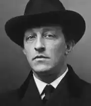
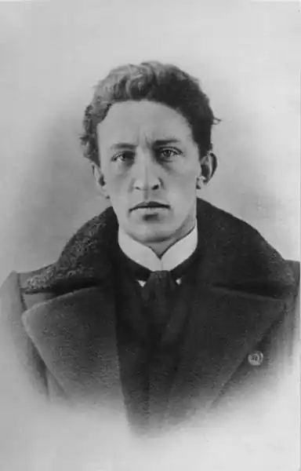

Блок Олександр
(1880-1921)
Яскравий представник російського символізму, поет, публіцист, драматург. Творчість поета умовно поділяють на три періоди, які сам поет представив у трьох книгах віршів. "Вірші про Прекрасну Даму" — визначальний цикл "Книги першої" (1898— 1904). Книга сповнена таємничої містики, прагнення кохання; шість років поет оспівує Прекрасну Даму, яку називає Вічно Юною, Вічною Жоною. Сюжети віршів (їх усього в книзі 686) символічні, філософічні. Друга книга символізує злам поглядів поета (1904—1908 рр.), розвивається урбаністична (міська) тема, поет сповнений апокаліптичних настроїв ("Місто", "Снігова маска", "Вільні думки"). Вірші 1907—1916 рр. — третя книга — це відтворення життя в усіх його проявах: кохання, революція, роздуми про батьківщину ("Страшний світ", "Кармен", "Батьківщина"). Поема "Дванадцять" (1918) стала завершальним твором Блока. Автор продовжує одну з головних своїх тем — тему Росії, яка постає в апокаліптичному вигляді. Гине старий світ, але народження нового є драматичним. У поемі звучить мотив самознищення. Блок вважав цей твір кращим з усього ним написаного.